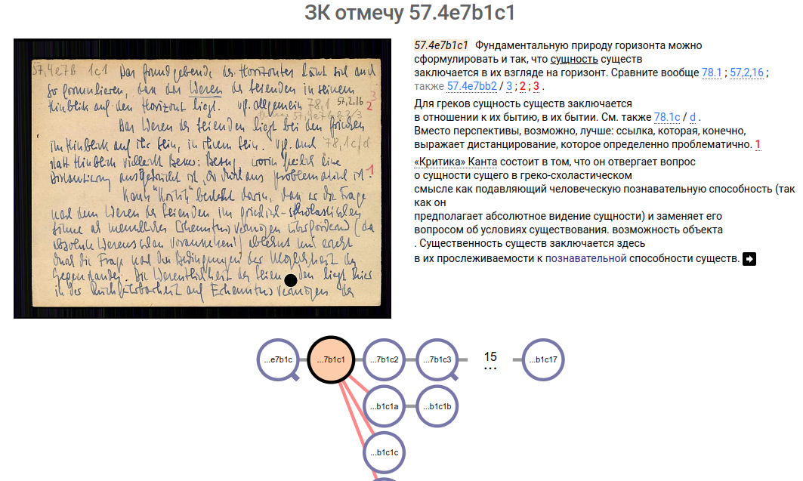
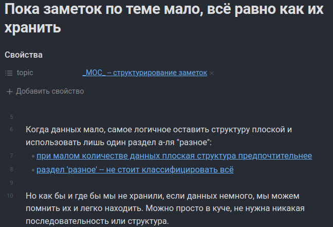
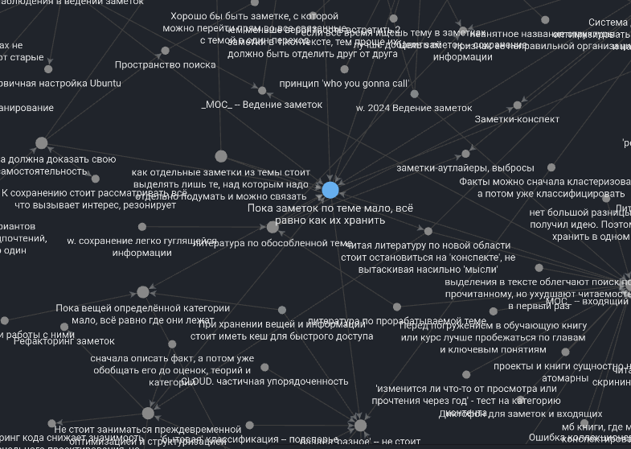

Zettelkasten — система работы с заметками. Она в первую очередь помогает углубить своё понимание в разрабатываемой теме, что особенно полезно учёным, блогерам и всем, кто пишет non-fiction. Это — обзорная статья про Zettelkasten. Что это за идея, в чём её магия и почему Зеттель — не швейцарский нож для всех задач, однако полезный инструмент.
Если вы не только что вот сейчас узнаёте про Zettlekasten, вполне возможно вы на одном из полюсов. Вы или считаете “он решит все мои проблемы”. Или думаете “эта фигня никому не нужна”. Истина посредине.
Пара примеров, где я использую подход, похожий на Зеттель:
- Пример работы с заметками — лекция Как Управлять Людьми с Помощью Текста
- Пример роста заметки — про трудность, сложность и интерес
История и почему в данном случае про неё стоит знать
 скриншот гугл-перевода с сайта niklas-luhmann-archiv.de с оцифрованными заметками. Сверху — заголовок (переведённый) и номер заметки (у Лумана была особая система нумерации). Слева — скрин заметки. Справа — отцифрованный текст заметки. Снизу — заметки, с которыми заметка связана.
Zettelkasten — дословно с немецкого “ящик для заметок” — система, используемая немецким социологом Николосам Луманом для своих научных работ по, собственно, социологии. Это был реальный шкаф с ящиками и кучей бумажных карточек. Луман утверждал, что Зеттелькастен для него был как “собеседник”, и что именно благодаря системе заметок Луман написал так много научных статей.
Подробно про историю Zettelkasten можете прочесть/посмотреть по ссылкам: 1 2 и в книге “Как делать полезные заметки” Зонке. В рунете вы можете найти разные названия метода: Zettelkastern, Зеттелькастен, Цеттелькастен, Зеттель, Цеттель.
Вот несколько утверждений про оригинальный Зеттелькстен:
- Зеттель использовался для помощи в сборе и обдумывании материала в гуманитарной науке
- Зеттель был аналоговый (бумажный, существовал в физическом мире)
- Зеттель использовался для большой, но одной области. Луман не хранил рядом с научными рассуждениями карточку “как сделать бабушкины пирожки”
- у Зеттелькастена не было чёткой рубрикации
- однако, у Зеттелькастена была фиксированная (и специфичная) нумерация каждой заметки, позволяющая прикреплять заметку за заметкой, строить цепочки рассуждений. (прим: эта часть меня наиболее завораживала, посмотрите про нумерацию на скриншоте и почитайте в источниках! Но в цифровом мире она уже, имхо, не особо применима)
- в Зеттеле хранились в основном “атомарные” заметки. Короткие и, записанные своими словами
- у заметок в Зеттеле в основном было много перекрёстной нумерации
- Николас Луман — создатель Зеттелькастена — описывал его детали и мотивацию в разных работах, но не посвятил ему целостную статью или книгу.
Зачем знать историю появления Зеттеля?
- Чтобы понимать: у каждого свой Зеттелькастен. Для Николаса Лумана Зеттелкастен был его личным проектом, а не методикой, которой он учил бы всех вокруг. Луман рассказывал о системе в нескольких статьях, но это не было описания “от и до”. У нас есть общее представление, понимание основных идей и, собственно, его итоговая система. Целостное рассуждение “что есть Zettelkasten” — лишь реконструкция, реверс-инжиниринг. Что является для него существенным, а что — деталью? Какой-то консенсус есть, но он не полный. И ещё менее полный он при переходе в цифровой вид.
- Чтобы чувствовать ограничения Зеттелькастена. Мне впервые про него рассказала подруга и я начал использовать систему для… всего. Но для каких-то областей он как будто бы вошёл как влитой, а для каких-то — мне будто бы приходилось натягивать сову на глобус. И, guess what, “как влитой” Зеттель был как раз для гуманитарных областей. Луман не создавал общую систему для всего. Он создавал систему, которая бы помогла ему, как учёному, быть лучше как учёный.
Что такое Zettelkasten
Tldr
Zettelkasten — система заметок, в основном создаваемая с внутренней мотивацией и направленная на понимание области. В этой системе заметки в основном атомарны, а “сила” системы — не в структуре, но в связях между заметками и в постепенном раскрытии тезиса от заметки к заметке
Текущее понимание Zettelkasten наследуется из его истории. Попробую раскрыть тему современных итераций Зеттелькастена по следующим темам:
- цели ведения
- уровень заметок и как выглядит одна заметка
- ссылки между заметками и (vs) рубрикация
- общая схема работы с системой
Цель ведения Zetllelkasten
Цель ведения системы Зеттелькастен — добавить понимания. Разобраться в какой-то области “от частного к общему” — “по индукции”. Вы замечаете и сохраняете себе разные мысли, цитаты, примеры, относящиеся к интересной вам теме. Потом происходит “магия”: заметки между собой начинают взаимодействовать, у вас появляется какое-то общее понимание темы и вы счастливы. Что за “магия”? Опишу ниже.
Писательство — побочный продукт ведения системы. По мере ведения Зеттелькастена у вас, вполне вероятно, появится возможность/желание описывать найденные закономерности. Так могут появиться научные статьи, лекции. Так появился мой блог, что вы ныне читаете. Но основной выхлоп — в том, что вы лучше понимаете область.
Зеттель — инструмент для мышления письмом, а не для запоминания. Он используется для того, чтобы накопить “критическую массу” мыслей на определённую тему и родить из них что-то новое. Он не используется, чтобы запомнить 500 разных топиков по 20 разным курсам. Зеттель напоминает про заметки хаотично. В P.A.R.A. всё лежит в своих рубриках “по полочкам”. В Зеттеле же нет чёткой рубрикации (см. раздел “связи между заметками”). А вспоминание чаще выглядит так: мы “бродим” по системе, переходя от ссылке к ссылке и вспоминаем о новой заметке, видя ссылку на неё.
Как выглядит заметка
Заметки в Зеттелькастене маленькие и атомарные (содержат по одной мысли). Они больше походят на кусочки лего, нежели на собранные дома.
Вот пример одной из моих заметок: 
- заголовок тут — законченное утверждение. Так мысли проще комбинировать, показывать как одна вытекает из другой.
- заметка тут — одна мысль. Так я могу собирать её в разные структуры, смотреть на неё с разных сторон.
- размер заметки мал — эта, например, 20 строк. Я могу охватить её одним взглядом. Так я сразу помещаю всё её содержимое к себе в “память”.
- цитат тут нет — только свои слова. Эта заметка — моё понимание. И как моё понимание может быть другими словами?
- заметка ссылается на разное — как внутри рубрик “про заметки”, так и вне её, например про организацию информации вообще. Так заметка больше укореняется в системе, так я смогу наткнуться на неё в необычных местах: где она будет полезна, но где я не ожидаю её увидеть.
Все эти пункты — про “типичную” заметку. И у меня и у Лумана есть много исключений. Разные заголовки, цитаты, длина, наличие ссылок — на любой из “контраргументов” вы сможете найти пример.
Связи между заметками
Структурно Зеттелькастен — “хаос” из заметок. Заметки не “прибиты” рубриками, а связаны друг с другом ссылками
- заметка подтверждает другую заметку? Добавляем связь
- заметка опровергает другую заметку? Добавляем связь
- заметка просто чем-то напоминает другую заметку? Добавляем связь

Рубрики в системе играю вспомогательную роль. Они есть и у Лумана и в современных реализациях. Но они скорее надстройка к системе, они помогают Зеттелькастену быть немного системой хранения. Но он не является им по сути. Подробнее эту мысль раскрою в следующем разделе.
Общая схема работы с системой (кратко)
- Возьмите свой любимый цифровой или аналоговый инструмент
- начните добавлять в него мысли-идеи относительно какой-то темы
- думайте, как новая мысль соотносится с имеющимися. Добавляйте ссылки
- когда вам покажется, что довольно много заметок относится к одной теме — добавьте специальную заметку-оглавление (обычно она называется MoC, Map of Content. Хотя Луман вроде этот термин не использовал, заметки-оглавления у него были)
У этого краткого описания много подводных камней. Не во всех темах оно будет работать. Много нюансов надо учесть. Часть подробностей будет ниже. А остальным во многом и посвящён мой блог.
Что даёт Zettelkasten
Tldr
Зеттелькастен накапливает “критическую массу” идей и мыслей, помогает их сопоставить между собой
Итак. Куча маленьких заметок. Нечёткая структура. Хаотичность. Всё это делает Зеттелькастен плохой системой хранения. Но хорошей системой для мышления.
Вот основные бонусы использования системы
Отделение содержимого от структуры
Пусть вы пишите статью. Или лекцию. Или диссертацию. Когда новая мысль приходит к вам в голову, вам надо проделать большую работу: сформулировать саму мысль, посмотреть, где она лежит в повествовании, проверить, не ставит ли эта мысль повествование с ног на голову, добавить подводку от предыдущего абзаца и отсылку к мысли в вывод. И откатить всё назад, если вы вдруг разочаруетесь в этой новой идее.
Наше погружение в тему имеет две стороны: накопление материала и его систематизация. Зеттелькастен позволяет их разделить.
В Зеттле наша задача сформулировать мысль и добавить ссылки на и с неё. Не заботясь о линейной структуре, не заботясь о том, чтобы все термины заметки были бы понятны стороннему читателю. Гораздо меньше работы, что делает эту работу гораздо проще.
Вам не нужна и сама статья, чтобы сохранить заметку. Вы можете сначала просто что-то сохранить интересное, а потом выбрать из 100 интересных заметок 20 и сформулировать из них статью. А потом взять 5 из этих, добавить 15 и получить другую статью. Не обязательно думать “а куда эта мысль ложится”.
Борьба с предвзятостью подтверждения
Сформулировав убеждение, мы в первую очередь будем искать подтверждения этой идее. Отбрасывая всё, что не подходит. Это — “предвзятость подтверждения”. С предвзятостью подтверждения стоит бороться, если вы хотите действительно разобраться в теме. И Зеттелькастен помогает нам.
Часто нас привлекает какая-то мысль и мы её просто сохраняем. Эти мысли собираются в кучу и лишь накопив достаточное количество заметок мы понимаем, что из них следует. Не формулируя убеждение изначально (т.е. не собираясь сначала писать статью с однозначным посылом), нам ничего не стоит сохранять аргументы за разные стороны. И потом их анализировать, пытаясь найти связи.
Бывает, что убеждение у нас уже есть. Тогда, конечно, мы сохраняем заметки зная, что они привязаны к теме. Но и в этом случае Зеттелькастен помогает бороться с предвзятостью подтверждения: ведь вам не надо соотносить противоречивый факт сразу же. Достаточно оставить его в системе. А значит, цена “добавления” становится ниже. Например: у меня есть убеждение, что воспитывать стоит исходя из уважения к ребёнку. Но я наткнулся на статью, что авторитарный стиль воспитания защищает от проблем алкоголя и наркотиков. Разумеется, мне не очень нравится, что нелюбимый мною стиль приносит пользу. Но мне не надо отбрасывать информацию или менять все убеждения под неё. Я просто сохранил заметку на будущее и когда-нибудь про это подумаю, без давления.
Вдохновение от далёких связей
У чёткой рубрикации есть плюс и минус.
Плюс — вы начинаете мыслить в контексте рубрики. Вы знаете, что вот тот пример относится к программированию, а вот тот — к написанию текстов. Вам очень просто теперь найти пример.
Минус — вы начинаете мыслить в контексте рубрики. Вы знаете, что вот тот пример относится к программированию, а вот тот — к написанию текстов. А значит, вам очень сложно понять, что между примерами есть что-то общее. В статье Пример роста заметки — про трудность, сложность и интерес я описывал, что мне нужно было объединить идеи из психологии, общения, геймдизайна, игрофикации и идей про флирт. Это очень сложно делать, когда ты думаешь только в рамках этих рубрик.
В Зеттелькастене рубрики играют малую роль. Гораздо большую играют связи между заметками. Вы можете “ходить” по ссылкам, размышлять об этом пути как о чём-то общем, без барьеров в виде рубрик. И натыкаться на неожиданные параллели между областями. Такие параллели сильно продвигают ваше понимание тем. И такие параллели стимулируют более глубокое изучение: “если явление выглядит одинаково для, например, программирования и написания текстов, нет ли там общей подоплёки?”.
Возникновение интереса при хождении по ссылкам
У чёткой рубрикации есть плюс и минус.
Плюс — вы, в большинстве случаев, знаете что там найдёте. Значит, как только вам понадобится информация — вы точно будете знать, где её искать.
Минус — вы, в большинстве случаев, знаете что там найдёте. Значит, у вас не будет эффекта “вау, вот это интересный взгляд”, когда вы вдруг увидите новую связь между заметками. Интерес вызывается, когда что-то для вас ново.
В Зеттелькастен вы не забываете про заметки окончательно, но часто “подзабываете”: ведь заметок много, чётких рубрик нет, всё в голове не удержать (да и не надо). За счёт этого вам интересно ходить по ссылкам и вы получаете удовольствие от маленьких “открытий” — полезное состояние, чтобы пользоваться системой.
Где применять Zettelkasten
Tldr
Создатель Zettelkasten использовал его в своей гуманитарно-научной области. Применять его лучше всего в похожих контекстах: большая область, в которой вы хотите разобраться, которая не очень хорошо структурируема и в которой ценность представляют связи между заметками
Итак, Zettelkasten поможет вам, если
- вам не страшно на время забыть о какой-то заметке (пока вы случайно заново на неё не наткнётесь)
- вам не надо смотреть готовый, скомпилированный материал
- вы получаете удовольствие от того, чтобы “побродить” по ссылкам, “поиграться” с заметками
Значит, для работы
- у вас должна быть внутренняя мотивация для работы с заметками — вам хочется разобраться в области из любопытства, вы не смотрите на заметки просто как на “ценный ресурс”
- заметки должны быть направлены не на сохранение информации, а на понимание
- в области нет устоявшейся таксономии — рубрикации, в рамках которых вам удобно мыслить
- область должна быть достаточно широка, чтобы заметки могли обрастать связями (подробнее об этом в следующем разделе)
- вы должны достаточно часто работать с системой, чтобы хоть примерно помнить содержимое (подробнее об этом в следующем разделе)
Zettelkasten скорее применим к гуманитарной сфере, нежели к естественно-научной. Важность широких связей, более широкая таксономия, большое количество сцепленных друг с другом идей и мыслей, допустимость различных интерпретаций и необходимость сравнивать идеи между собой… Всё это, хоть и встречается во всех областях, всё-таки более характерно для гуманитарных областей. Будучи сам физиком, я призываю не ожидать столь многого от методики в естественных науках.
Где Zettelkasten даёт сбой, что использовать там
Tldr
Везде вне описанного выше Zettelkasten работает хуже. Для областей, не входящих в фокус вашего внимания. Для областей, где вам надо сохранять информацию, а не понимать. Для областей, где вы движимы внешней мотивацией. Для всего этого стоит дважды подумать, перед тем как решить, что вам нужен Зеттель
Рассказывая про возникновение интереса выше, я упомянул: система хорошо работает, когда вы не держите все связи в голове, но при этом и не забыли систему окончательно. У этой идеи есть два следствия:
- Зеттель не работает в полной мере, пока заметок очень мало. Потому что вы их все отлично помните, помните все связи между ними и у вас нет “открытий” по мере работы с системой. Вы могли сталкиваться с утверждением, что “Зеттелькастен ведёт себя как собеседник, но это свойство открывается лишь после пары лет ведения заметок”. Это утверждение — как раз про возможность “подзабыть” и открыть заново связи.
- Зеттель не работает в полной мере в областях, куда вы не заглядываете — вне фокуса вашего внимания. Хоть открытия совершать приятно, в голове должно оставаться общее ощущение куда идти и что смотреть. Ваш путь по заметкам, чтобы приносил радость, должен как-то начаться. Вы должны с чем-то написанную заметку соединять. Всё это невозможно, если вы совершенно забыли вашу систему.
Кроме того:
- Zettelkasten не работает, когда ваша цель — создать справочник. Если это ваша цель — используйте систему, подобную P.A.R.A.
- Zettelkasten не работает, когда вам надо писать не опираясь на имеющиеся в системе смыслы, а анализируя каждый раз новое (см об этом Кэл Ньюпорт не выкупает Zettelkasten - by Андрей Суховский)
- Zettelkaten не работает, когда вы только обучаетесь новой области — вам так будет лишь сложнее находить атомарные заметки.
- наверняка, Zettelkasten не работает где-то ещё. Так что статья будет пополняться)
“как всё сложно”
Рассказывать про Zettelkasten не просто. Но даже этот рассказ оставляет за бортом кучу деталей.
- Зеттель на разные темы. Луман занимался лишь социологией. Я увлекаюсь разным — от программирования до философии. Как совмещать темы? Делать ли систему единой?
- Зеттель и справочник. Как совместить Зеттелькастен и те темы, где нас интересует справочная информация? В одной или разных системах? Что, если на один и тот же топик нам хочется и углубить понимание и сохранить несколько ссылок?
- Зеттель и динамика. Как создавать систему? Как её изменять? Что делать с изменением нашего интереса? С изменением мотивации работы?
Надеюсь, о пропущенных темах смогу поговорить позже :)
обсуждение в Телеграм